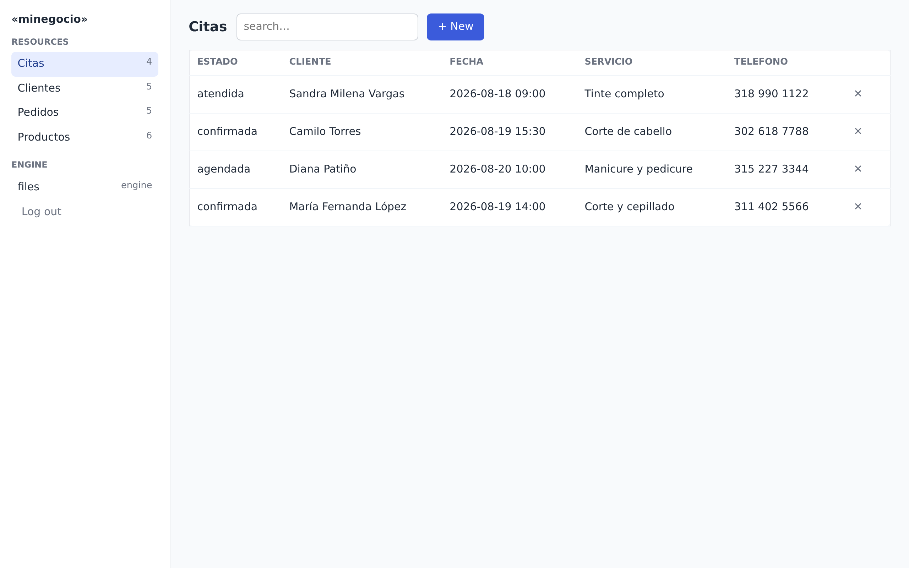
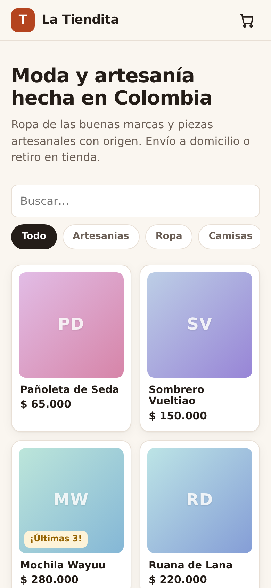

Le hacemos un sistema a la medida — pedidos, citas, inventario, clientes — y se lo mostramos funcionando antes de que pague. En días, no en meses.
Le responde una persona, no un robot. La primera demostración es gratis.
¿Le suena?
Nada de esto es culpa suya. Son procesos que crecieron más que las herramientas con las que empezaron. Eso se arregla con un sistema hecho para su negocio — no uno genérico al que usted se tiene que amoldar.
Véalo con sus propios ojos
Este video es real y dura 22 segundos. Es el sistema de pedidos de una repostería de ejemplo: entra un pedido nuevo y queda confirmado, con su cliente, su detalle y su valor. Todo el que atiende ve la misma lista, al día.

Las pantallas y el video salen de una aplicación de demostración creada con nuestra herramienta; los datos son de ejemplo. En la primera reunión le mostramos lo mismo, pero con su proceso y sus datos.
Usted nos cuenta su proceso y lo ve funcionando en esa misma reunión, en menos de una hora. Gratis y sin compromiso: si no le sirve, no pasa nada y no debe nada. Así no tiene que creernos — lo ve.
Cómo funciona
Por WhatsApp o en una llamada. Con sus palabras: «los pedidos me llegan así, los apunto acá, se me pierden allá». Si prefiere, mande un audio.
En una reunión se lo mostramos andando, con sus datos. Usted lo prueba, pide cambios, y ahí mismo decide si sigue. Recién entonces hablamos de precio — cerrado y por escrito.
En días queda en internet, con su propio dominio y con acceso para su equipo, cada uno con su clave y sus permisos. Lo acompañamos después: los cambios se piden por WhatsApp, igual que todo.
Por qué confiar
Miguel Acosta. Casi 10 años trabajando como programador analista en la infraestructura de bancos de América Latina — sistemas donde un error cuesta de verdad. Profesor de la Universidad Tecnológica de Pereira.
Porque no empezamos de cero cada vez. Trabajamos con una herramienta propia que ya trae resuelto lo que todos los sistemas repiten — las claves, los permisos, las listas, los respaldos — y el tiempo se invierte en lo que hace único a su negocio. Por eso lo que a otros les toma meses, acá toma días.

Preguntas frecuentes
Depende del tamaño del proceso: no cuesta lo mismo ordenar las citas de un consultorio que montar el sistema completo de una distribuidora. Por eso no publicamos una tarifa única — sería mentirle en alguna de las dos direcciones.
Lo que sí es fijo: la demostración es gratis, y antes de empezar usted recibe un precio cerrado, por escrito. Sin sorpresas ni cobros por horas que nadie controla.
La demostración: una reunión de menos de una hora. El sistema andando en internet: días en la mayoría de los casos. Un proceso grande, con varias partes, puede tomar algunas semanas. Lo que no va a escuchar de nosotros es «vuelva en seis meses».
Los va a necesitar — los negocios cambian. El sistema está hecho para eso: agregar un campo, una regla o una pantalla es trabajo de poco tiempo, no un proyecto nuevo. Los cambios se piden por WhatsApp y se cotizan igual: precio cerrado antes de hacerlos.
Suyos, siempre. El sistema queda instalado en un servidor a su nombre, con sus claves. Sus clientes, sus pedidos y sus números no viven en la plataforma de un tercero que mañana cambia las reglas. Y puede pedir una copia completa de todo cuando quiera.
Es la pregunta correcta y merece respuesta seria. El sistema no depende de que nosotros existamos: queda a su nombre, en su servidor, con sus claves. La tecnología de base es pública y está documentada — cualquier ingeniero de sistemas puede tomarla y seguir. Usted no queda amarrado a nadie, ni siquiera a nosotros.
No. Si usted maneja WhatsApp, maneja esto. Su equipo entra con una clave y ve listas y botones con los nombres de su negocio: pedidos, citas, clientes. De lo demás nos encargamos nosotros.
Con eso alcanza para empezar. Le respondemos, le hacemos las preguntas del caso y agendamos su demostración gratis.
Si prefiere, mande un audio contando su caso. Así de simple.